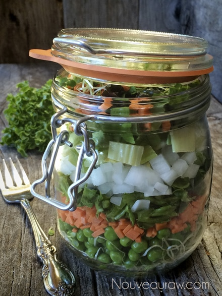
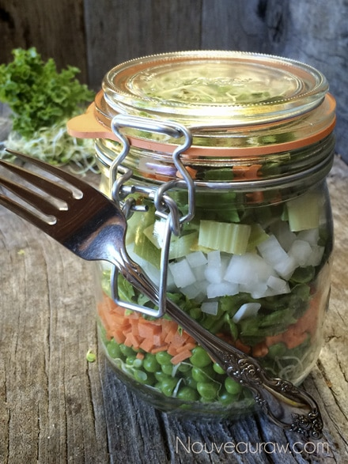

Dear Bob, Salad

~ raw, vegan, gluten-free, nut-free ~
Dear Bob,
I love you dearly, but I am taking the night off from making dinner. I prepared a salad for you in the fridge (you know the big black object with doors in the kitchen?) Remove the jar from the fridge and dump it in a bowl (you can find a bowl in the lower cabinet of the island), toss with your favorite salad dressing (it’s on the second shelf, right side behind the date paste) and enjoy.
Your loving wife, Amie Sue
P.S. the dish soap is under the sink on the left side. :)
Layering salads in jars aren’t anything new. It’s been going on for some time now, but I thought I would just share this simple approach for having salads ready to go in case you haven’t seen it before or it slipped your mind.
You can add salad dressings to the jars if you wish or add them later on when ready to eat. When adding the dressing to the jar, you want to add it first thing, so it sits in the bottom of the jar. Then start layering the jar with hardier veggies (cauliflower, cucumbers, radishes, onion, etc.) or other ingredients (quinoa, rice, etc.).
Make sure that you start off with fresh ingredients. Don’t use lettuce or greens that are on their last leg. With fresh veggies, these salads will keep up to a week. This makes quick meal planning a cinch. On a beautiful Sunday afternoon, after a trip to the farmers market, wash, dry, slice, cut, mince all the veggies that you want to use in your salads. If you wish to make up a week’s worth, mix them up and have fun creating different flavors and visuals.
Another quick tip is to fill those jars up to the rim, so there isn’t a lot of air lurking around the top. This will help with the freshness. If you use veggies that are more on the wet side, let’s say tomatoes or cucumbers, place them down towards the bottom of the jar. That way the juices that leak from them won’t get on your lettuce causing it to wilt more quickly.
So remember:
- Dressings: Add dressings to the base of the jar.
- Hardy veggies: Follow the dressings with hardier veggies; cauliflower, zucchini, carrots, celery, onions, ……
- Wet veggies: Add in tomatoes, cucumber and other veggies that may release liquid over time towards the bottom of the layering process.
- Lettuce/greens: Use fresh greens only, cut or tear to bite size pieces and pack into the top of the jar.
- Superfoods: Add some extra nutrient boosting power to your salads by adding in; dried fruits, nuts, seeds, hemp seeds, and so forth.
- Ready to eat? If you added the dressing into the jar ahead of time, give a good shake, so the dressing coats the salad makings. Then pour out into a bowl or on a plate. Enjoy!

